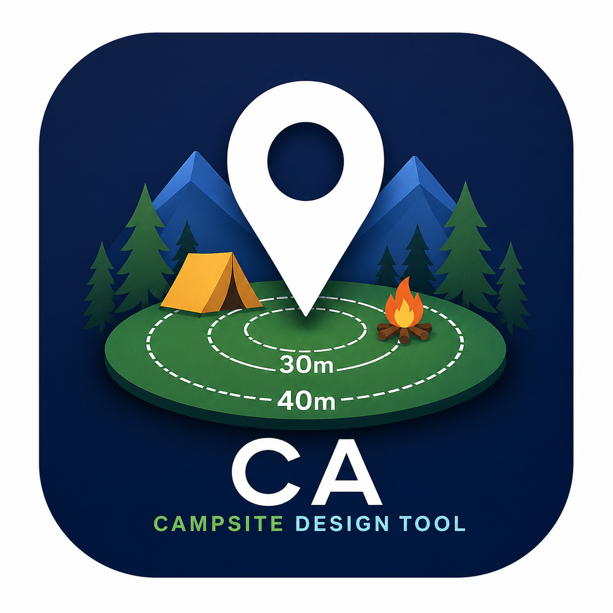

アクセスにはパスコードが必要です

Wayfarer CSV / My Maps KML / KMZ から
POIを読み込み、
30m・40m円と既存POIレイヤーを自動生成します。
このツールは「POIを増やすため」ではなく、安心して集まり、遊びやすいキャンプサイトの設計図を作るためのものです。
複数CSVを同時に取り込んで、重複したPOIを自動で削除します。
Wayfarer Map（スクリプト導入済み）から「Nearby Wayspots」を押して Export CSV を実行します。
※広い公園の場合は複数回に分けて抽出してください。
スクリプト導入がまだの方は スクリプト導入方法 をご確認ください。
CSV ファイルを選択します。
※正しくポケストップ・ジム・パワースポットを分類するため、
CSVの使用を推奨します。KML / KMZでは分類できない場合があります。
生成する円を選択します。
POI作成時は40mで統一する（管理者側の調整余地を確保するため）。
配置が厳しい場合のみ、30mまで調整可能とする。
KMZを生成します。出力されるレイヤーは以下の構成です。
生成されたKMZファイルをGoogle My Mapsにインポートしてください。
出力構成に応じたレイヤーで表示されます
iPhoneではKMZがZIPとして保存されてしまいます。
その場合は以下の手順で拡張子を変更してください。
すでにMy Mapsを作成済みの方向けに、必要なパーツだけを追加生成するための機能です。
円だけ生成や既存POI分類だけ生成など、作成済みのMy Mapsを調整・整理するための機能を利用できます。
CSV / KML / KMZから、30m円・40m円だけを生成します。
既存のMy Mapsに円レイヤーだけ追加したい場合に使います。
⚠ 既に作成済みのMy Mapsから書き出したKMZを読み込む場合、既存の30m円・40m円レイヤーは自動で読み込み対象から除外します。
ただし、My Maps上の古い円レイヤーは自動削除できないため、新しい円KMZをインポートする前に、My Maps側で古い円レイヤーを削除してください。
円を作成したいファイルを選択します。
追加希望ポケスト／追加希望ジム／追加希望パワスポの空レイヤーだけを生成する機能を追加予定です。
CSV / KML / KMZから、既存POIだけをポケストップ／ジム／パワースポットに分類して生成します。
他CAが作成したMy Mapsや、未整理のKMZを確認しやすく整理したい場合に使います。
ℹ 円レイヤー、追加希望レイヤー、レイヤー保持用のダミーポイントは自動で除外します。
出力されるのは、既存POI分類用のレイヤーだけです。
分類したいCSV / KML / KMZファイルを選択します。
会長専用の確認・レビュー補助機能です。
他CAから受け取ったMy Maps / KMZの内容確認や、レビュー前の整理に使います。
他CAから受け取ったKML / KMZの中身を確認します。
POI件数、レイヤー構成、円レイヤー有無、追加希望レイヤー有無、ダミーポイント混入をチェックできます。
チェックしたいファイルを選択します。
KML / KMZ内の有効POIをもとに、半径内にPOIが集中している場所を確認します。
円レイヤー、ダミーポイントは判定対象から除外します。
既存POIと追加希望POIをまたいで、密集状況を確認します。
チェックしたいKML / KMZファイルを選択します。
Baseアドオンを追加します。
※事前にスクリプトをインストールしていない場合、アドオンは動作しません。
どこに人が集まり、どのように遊び、どこで交流が生まれるかを伝えるための設計図です。
POI作成時は40mで統一する（管理者側の調整余地を確保するため）。
配置が厳しい場合のみ、30mまで調整可能とします。
25個は上限であり、すべて追加される保証はありません。
体験設計の意図が伝わることが重要です。
既存POI、追加POI、活動エリアは混在させず、
カテゴリごとに分けて管理します。
Wayfarer Map（スクリプト導入済み）から「Nearby Wayspots」を押して Export CSV を実行します。
広い公園の場合は2〜3回に分けて抽出してください。
CSV / KML / KMZ に対応しています。複数CSVを入れた場合、guidで重複削除します。
出力構成に応じたレイヤーで表示されます
CSV / KML / KMZを読み込み、40m未満の組み合わせを確認します。
距離チェック用のファイルを選択します。
読み込んだレイヤーから、既存POI・追加POIを選択します。
円レイヤーは判定対象外です。
現地の状況を選択してください。